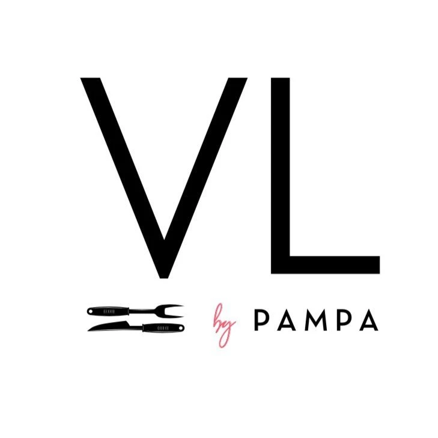
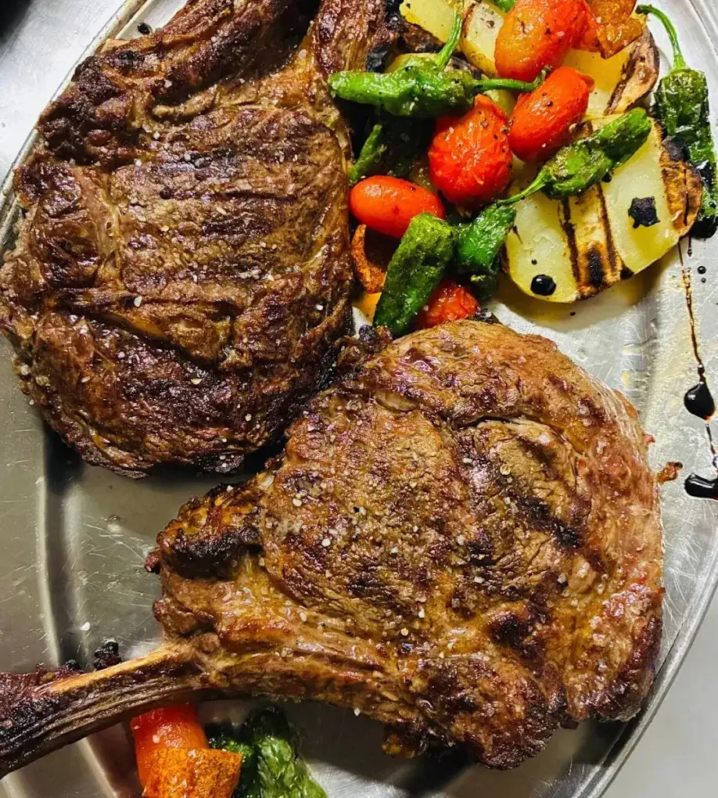
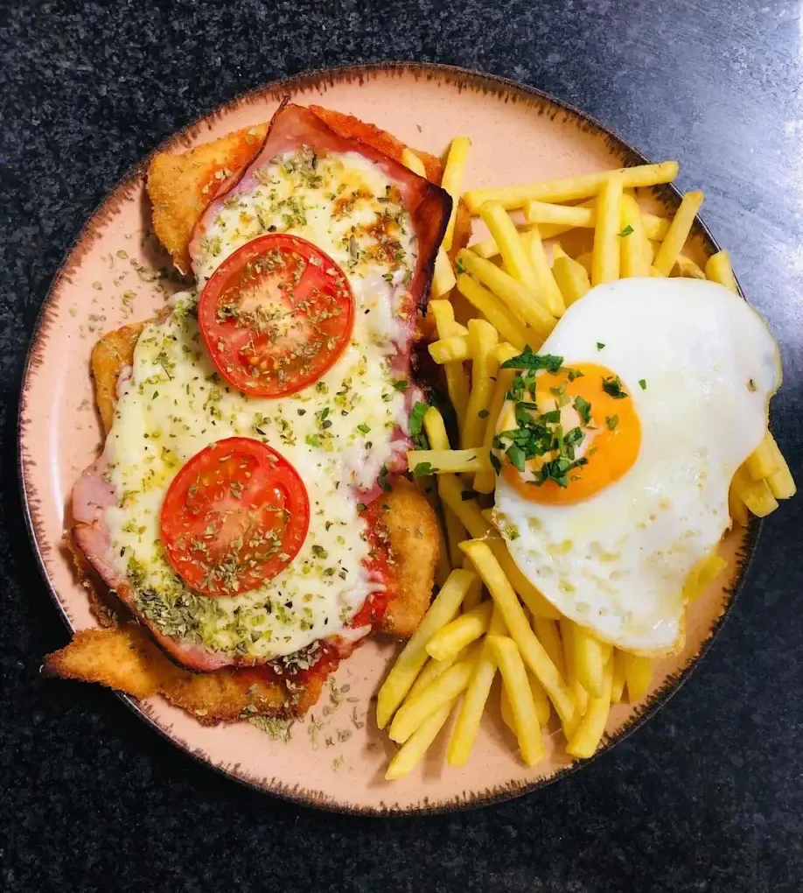

Cuina argentina a Calafell
Milaneses, empanades i carn a la brasa en una sala petita on es respira futbol.
Reserves només per telèfon.

La casa
Un racó de l'Argentina al carrer Mallorca
Viejas Locas és un restaurant argentí a Calafell, a tocar de la platja. La carta gira al voltant de la milanesa, les empanades i la carn a la brasa.
A les parets hi ha banderins, samarretes i fotos emmarcades del futbol argentí. La sala és petita, així que val la pena trucar abans de venir.
- Menja aquí, per emportar o a domicili
- Reserves per telèfon
- Tancat dilluns i dimarts


Carta
Les milaneses surten de titulars
Plats i preus de la carta a domicili publicada pel restaurant (Uber Eats). A sala la carta és més àmplia i els preus poden variar.

Milanesas
Totes de vedella i amb patates fregides.
- 18,50 €
Napolitana
Salsa napolitana, pernil dolç, tomàquet i mozzarella.
- 18,00 €
Fugazza
Mozzarella i ceba.
- 18,50 €
Chacarera
Mozzarella i encenalls de pernil.
- 18,50 €
Suprema
Mozzarella, bacó i pebrot.
- 18,50 €
Viejas Locas
Cheddar i bacó.
- 18,00 €
Suiza
Mozzarella.
- 17,50 €
Morrona
Mozzarella, pebrot i olives.
Empanadas
- 21,00 €
Mitja dotzena
6 unitats.
- 40,00 €
Dotzena
12 unitats.
Per picar
- 5,00 €
Choripán
- 9,50 €
Croqueta de cecina
A la brasa
La carta de brasa i les postres encara no són en aquesta web.
Proper aviat
Horari i ubicació
Vine a veure'ns
| Dilluns | Tancat |
|---|---|
| Dimarts | Tancat |
| Dimecres | 13–15 h · 20–23 h |
| Dijous | 13–15 h · 20–23 h |
| Divendres | 13–15 h · 20–23 h |
| Dissabte | 13–15 h · 20–23 h |
| Diumenge | 13–15 h |
Horari orientatiu: confirma'l per telèfon abans de venir.
Carrer Mallorca, 1443820 Calafell (Tarragona)
Instagram @viejaslocasbypampa Demana a domicili per Uber Eats